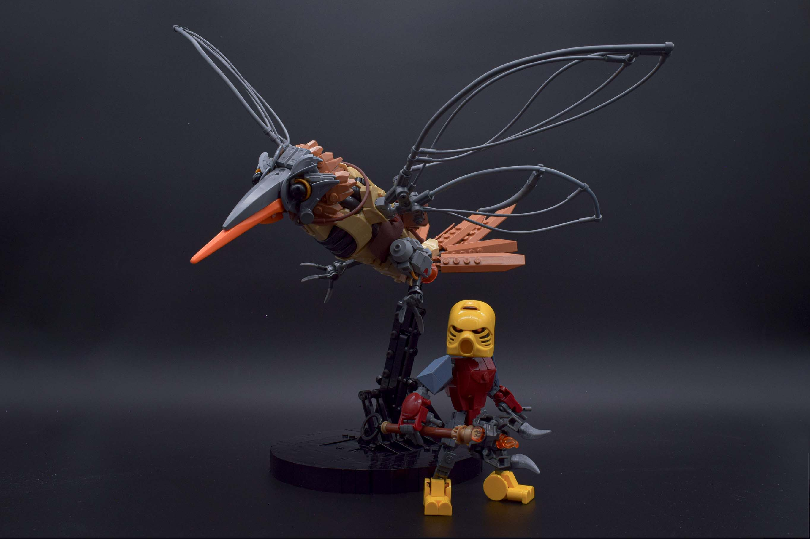
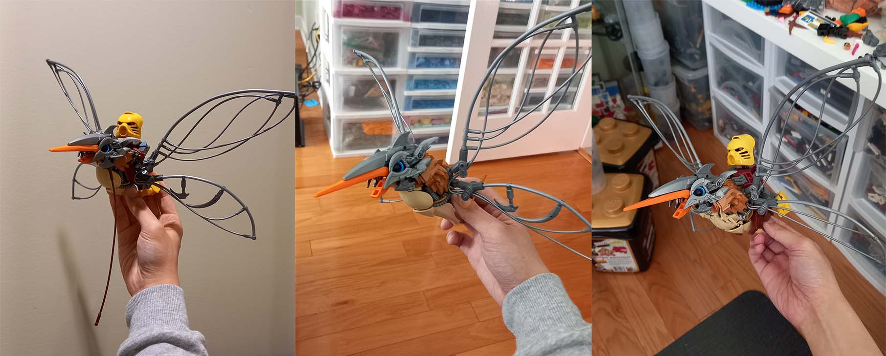
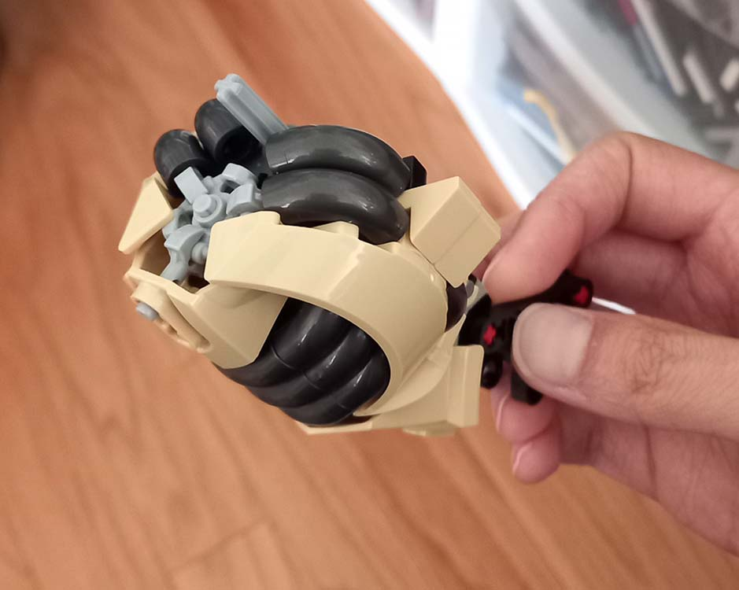
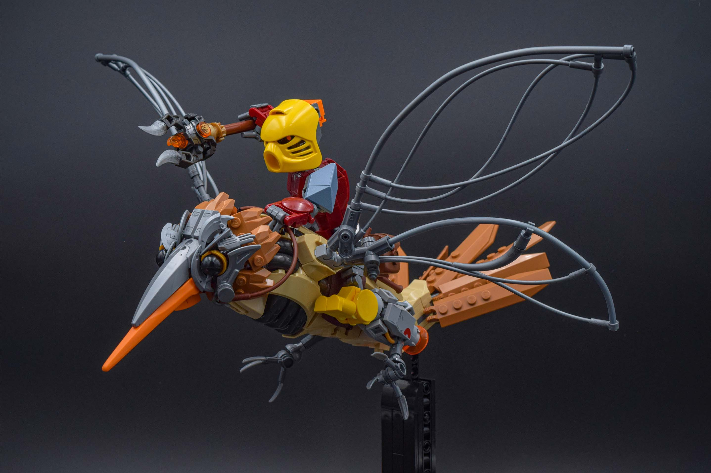
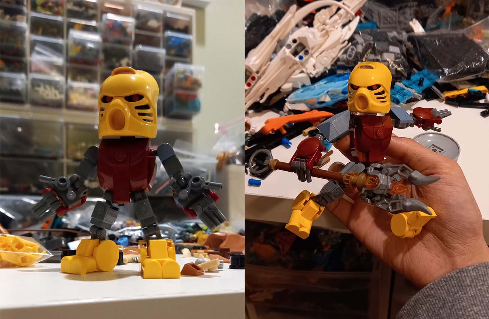
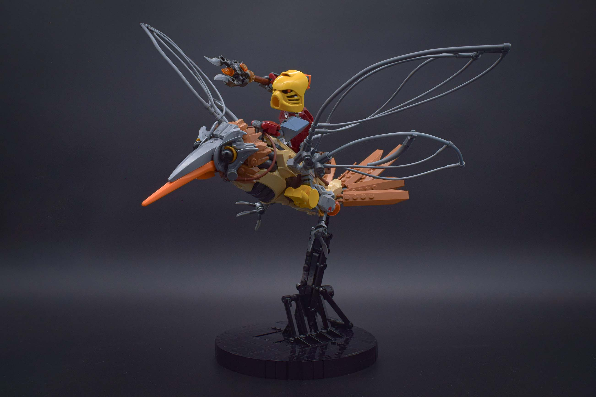
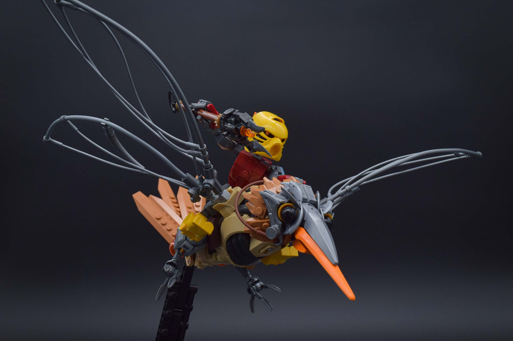
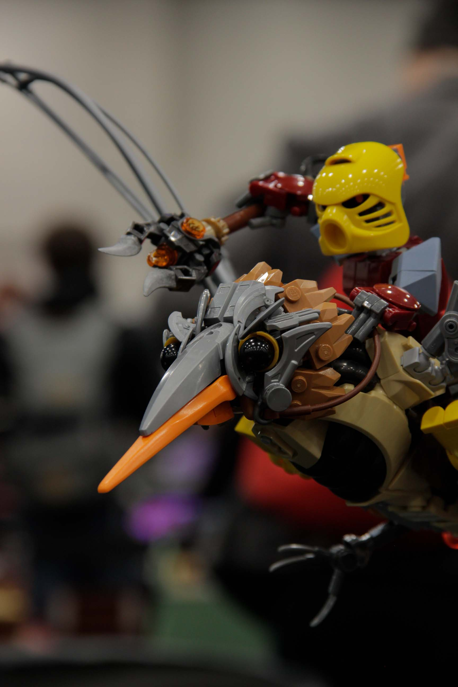

Jaller & Gukko

Wow. It's finally posted! I started this MOC back in 2023 and completed it around early 2024, but since this was part of a larger collab, it had mostly been kept secret until now. I'm happy it's out for the world to see!
Concept Development
For the Gukko bird, I drew inspiration from both the Gukko's final appearance in the Mask of Light (MoL) film as well as concept art by Leon Gor for the film. As the Gukko bird was also based on hummingbirds, I used anatomy references of that animal to relate the design to something familiar.
As for Jaller, I didn't want to do anything too fancy to the design, as I needed him to be fairly poseable when mounted on the Gukko bird. I opted for a slight remake of the Miramax design using pretty much all System pieces.

Early Stages
I remember struggling quite a bit at the start of this MOC. In general, bird builds are tiny, which limits the amount of space to work with. I struggled quite a bit trying to figure out a good blend and separation of textures of organic, mechanical, and armor details as well as condensing all of that into a tiny space. Furthermore, I had to scale Jaller such that he could ride on an already small animal.
The zipline/flex tube wings were one of the first parts I built for the MOC. One of the concept designs pictured previously had insect wings, and I thought that would be a neat feature to include. I settled on dragonfly wings as the Gukko's appearance in MoL and in the set has two pairs of wings. In regards to creating the wings first, I felt it was important to see if this was even possible with LEGO; otherwise, I would have to change direction for the MOC.
Restarting from Zero (or close to zero)

Like I said, I struggled a lot with the start of this MOC. While I had figured out a good wing design, I could not figure out a good layering and texture distribution. I knew I wanted to work with medium nougat as a feather/fur texture since dark orange, which is on the original set, didn't have the type of parts to achieve that texture. However, I had never really built a creature quite like this that would blend mechanical and organic elements. I was tunnel-visioned into a mindset that you have one upper layer and one lower layer color for creatures as that was what I was accustomed to from my previous bird MOCs.

I eventually scrapped everything but the wings and just played around with some macaroni parts. I created a tube texture by spamming some of them, and this led to designing a casing around these tubes. From here, I attached the wings, and all the pieces started falling in place. The texture distribution would be medium nougat as feathers/fur, tan as a smooth casing and main body color, and gunmetal/silver for mechanical sections of the body. The face armor also uses silver, and while it's already been coded as mechanical for the body, it is sufficiently away from that section of the build that the texture is still distinct.
The Build

With the texture distribution figured out, the rest of the MOC came together rather quickly. The Gukko's leg design again draws inspiration from the concept art. One of the designs had leg thrusters, which totally do not make sense but are badass. I used some printed hex add-ons from CCBS Star Wars figures as both the print and angular geometries would read as mechanical. Furthermore, a whip is shoved into the sub-build for wiring detail, and the talons use some highly illegal part modification.

For Jaller, I had started with a version with proportions similar to the MoL movie version, but ended with scaling him up a little. There were several reasons for this. First, I needed the legs to wrap over the Gukko's body, and secondly, I needed a waist pivot point. I wanted him to hold some sort of staff or spear in a "I'm about to strike" pose, and the waist pivot added some much needed dynamicism. As a side note, the weapon design is a reference to the Ta-Koro guard bident, which I learned from a wikipedia article (fake fan alert).
Closing Thoughts
Looking back and reflecting on the build process and struggle, I feel like this build was really one of those level-up moments. It gave me a different view of creature design that carried through to my other works in 2024. It's kind of strange posting this build two years later, especially since I had already brought it around to multiple conventions. That being said, hopefully the MOC isn't too outdated!
Special thanks to Ari (loafbuilds) for the amazing edit and Aiden (aiden.builds) for the beautiful convention photo below. Also check out the rest of the collab here.


